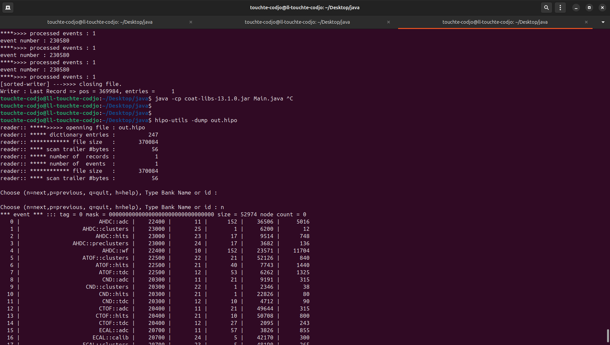

Lognumber 10.
Submitted on Sun, 27 Jul 2025 - 02:56:37 CEST
Marker:
Send to:
I read the hipo-utils code. I used the coat-libs-13.1.0.jar library; I took example of the filter code to add my own constraints. That works! In this peace of code, I used a small constraint: the value of the event number. I advice to read this code as example for more complex features: remove bank, ... I wanted to speed up, so I may have copied unnecessary piece of code. Download coat-libs-13.1.0.jar Run
java -cp coat-libs-13.1.0.jar Main.java
Code
/*
* Inspired by https://code.jlab.org/hallb/clas12/coatjava/jnp/-/blob/master/jnp-hipo4/src/main/java/org/jlab/jnp/hipo4/utils/HipoUtilities.java?ref_type=heads
*
* For the moment, the output file is out.hipo
*/
import java.io.Console;
import java.io.File;
import java.util.ArrayList;
import java.util.Arrays;
import java.util.Collections;
import java.util.List;
import org.jlab.jnp.hipo4.data.Bank;
import org.jlab.jnp.hipo4.data.Event;
import org.jlab.jnp.hipo4.data.Schema;
import org.jlab.jnp.hipo4.data.SchemaFactory;
import org.jlab.jnp.hipo4.io.HipoChain;
import org.jlab.jnp.hipo4.io.HipoReader;
import org.jlab.jnp.hipo4.io.HipoWriter;
import org.jlab.jnp.hipo4.io.HipoWriterSorted;
import org.jlab.jnp.utils.benchmark.Benchmark;
import org.jlab.jnp.utils.benchmark.ProgressPrintout;
import org.jlab.jnp.utils.data.ArrayUtils;
import org.jlab.jnp.utils.options.OptionStore;
import org.jlab.jnp.utils.file.FileUtils;
public class Main {
public static void main(String[] args) {
System.out.println("Test: coat-libs-13.1.0.jar");
String filename = "/home/touchte-codjo/Desktop/hipofiles/occupancy/rec_clas_022435.evio.00003.hipo";
HipoReader reader = new HipoReader();
reader.open(filename);
Event event = new Event();
// pre start (to be understood)
SchemaFactory factory = reader.getSchemaFactory();
HipoWriterSorted writer = new HipoWriterSorted();
List schemaList = factory.getSchemaList();
List schemaBanks = new ArrayList();
for (Schema schema : schemaList){
schemaBanks.add(new Bank(schema));
}
for(Schema schema : schemaList){
writer.getSchemaFactory().addSchema(schema);
}
// start (to be understood)
writer.open("out.hipo");
reader.close();
Event inputEvent = new Event();
Event outEvent = new Event();
ProgressPrintout progress = new ProgressPrintout();
// only one file
HipoReader ir = new HipoReader();
ir.open(filename);
System.out.println("****>>>> openning file : " + filename);
int counter = 0;
System.out.println("--> number of events = " + ir.getEventCount());
Bank runConfigBank = new Bank(reader.getSchemaFactory().getSchema("RUN::config"));
while(ir.hasNext()==true){
outEvent.reset();
ir.nextEvent(inputEvent);
// my filter
inputEvent.read(runConfigBank);
int event_number = runConfigBank.getInt("event", 0);
System.out.println("event number : " + event_number );
if (event_number == 172923) {
// end my filter
int tag = inputEvent.getEventTag();
outEvent.setEventTag(tag);
for(int b = 0; b < schemaBanks.size(); b++){
inputEvent.read(schemaBanks.get(b));
if (schemaBanks.get(b).getRows()>0) {
outEvent.write(schemaBanks.get(b));
}
}
counter++;
writer.addEvent(outEvent,outEvent.getEventTag());
progress.updateStatus();
}
if (counter > 10) {
writer.close();
return;
}
System.out.println("****>>>> processed events : " + counter);
}
writer.close();
}
}
Attachments (1)
1.
